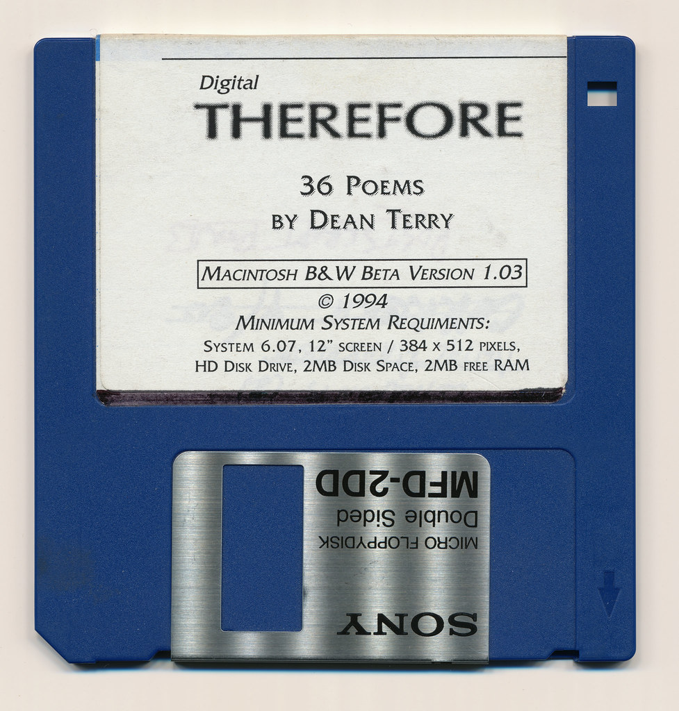

Emulation for Archivists
Know your content
You have something you want emulation to help you access, but what is it, exactly? When we use computers to run software and look at files, we are engaging a complex stack that involves hardware, operating system environments, software, and files themselves (Gates 2020). Effective emulation will require determining the appropriate combination of these elements to produce the access result you want. While emulation can ease the hardware requirement, the other three must be considered to work together.

Review your documentation
Start by looking over any documentation you have to accompany the digital content you want to emulate. Is there any accompanying text or labels that indicate system requirements required to run it? Do you know what kind of computer was originally used to create the file? All documentation will be useful to determining the appropriate emulation environment.
In Module 1, we looked at "The Would-Be Gentleman" case at Stanford University Libraries, in which documentation stored with the game helped the archivists determine the earlier version of MacOS needed to emulate the software.
Tip: Take careful and detailed notes of any information you can gather while investigating your digital content. This will become important documentation for future archivists!
Analyzing file formats and content
File format extensions like .JPG or .PDF can tell you some information about the type of file you have, but this is often insufficient for determining the most appropriate way to view it. Formats with the same extensions are not always exactly the same, and especially for those like JPEG and PDF that have been in use for thirty or more years. Different versions with different capabilities may have been released throughout their history. The PRONOM Technical Registry(opens in a new tab) lists four pages of results when searching PDF. How do you know which kind you have?
Tools like MediaInfo(opens in a new tab), JHOVE(opens in a new tab), and DROID(opens in a new tab) can extract technical information about a file to indicate a corresponding computing environment. DROID refers to PRONOM to identify file formats, and the Library of Congress' Sustainability of Digital Formats(opens in a new tab) is another useful guide for formats. These tools can be especially useful if you encounter a format you're not immediately familiar with, which could mean it's a good case for emulation.
These tools can help gather information about a specific file, but they may not be able to provide details about additional dependencies or requirements. Nonetheless, understanding as much as you can about the specifics of your file will help determine the appropriate software needed to display it.
Analyzing software
All files require software to display their content, so your emulation environment will also need to include software within it.
Some files may require proprietary programs to match their proprietary formats (such as Adobe Photoshop files only opening in Adobe programs), which cases you will likely want to emulate that specific software to access the file. Alternative or open-source software may also be an option, even if the program wasn't the original one used to create the file. Using alternative software requires additional consideration concerning the desired "look and feel" of emulation (see below). For example, the open-source image program GIMP can open Photoshop PSD files, but the results will not replicate the complex capabilities of Photoshop's editing suite(opens in a new tab).
The EaaSI program is developing a Universal Virtual Indicator (UVI) that would automatically match files to required software and dependencies, making opening an obsolete file as easy as clicking a link to its appropriate software and environment. In a 2018 blog post(opens in a new tab), EaaSI's Euan Cochrane describes the process of gathering technical metadata to algorithmically connect formats to software.
Emulating software is necessary for opening obsolete files, but in many cases, the software itself may be the main goal for access. This includes video games, time-based media, and other custom programs.
Patricia Falcao, Annet Dekker, and Pip Laurenson at Tate defined the following typology for software-based artworks, which can be applied more generally for any software. This typology provides consideration of what might be necessary to emulate software to run as intended.
- Contained
- Software is wholly contained within itself.
- Networked
- Software relies on network connections to access data or perform actions.
- User-dependent
- Software relies on user input to function.
- Generative
- Software is constantly changing as a result of outside connections or input.
If your software originated on a physical storage medium, you will likely want to create a disk image both for preservation and for emulation purposes. A disk image is a file that copies the contents of a disk, such as a floppy disk or CD, that can then be stored and mounted without returning to the original, unstable disk medium. An emulated environment can load the disk image in lieu of inserting the disk each time you access it.